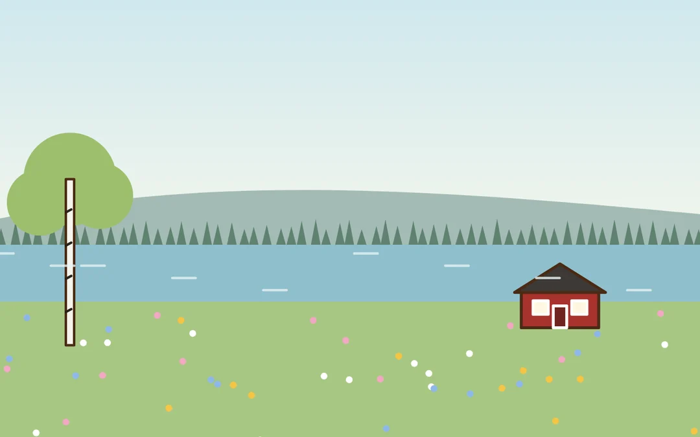
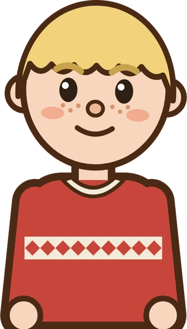
1880Little Gustaf, 8
Mora by the lake
Born in a red cottage by Lake Siljan. Every June the whole family walks the cows up to the summer farm, deep in the forest.
Follow Gustaf from a red cottage by Lake Siljan in Sweden to a new life in Minnesota. Every crossword you solve brings back a memory, with Kantis the cheerful chanterelle by your side.
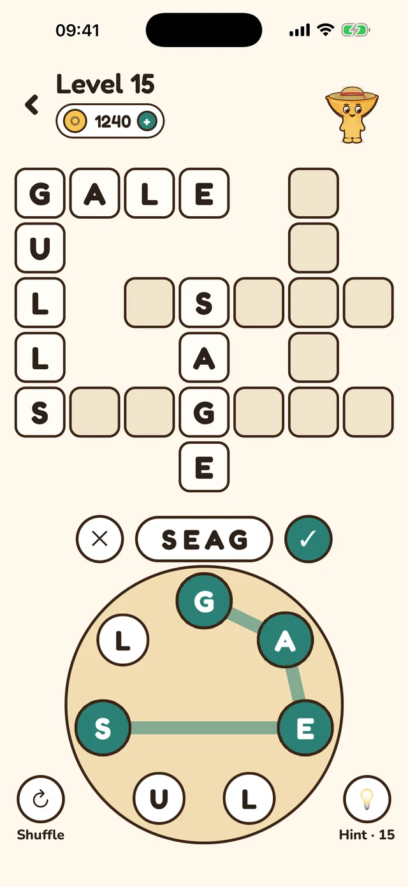
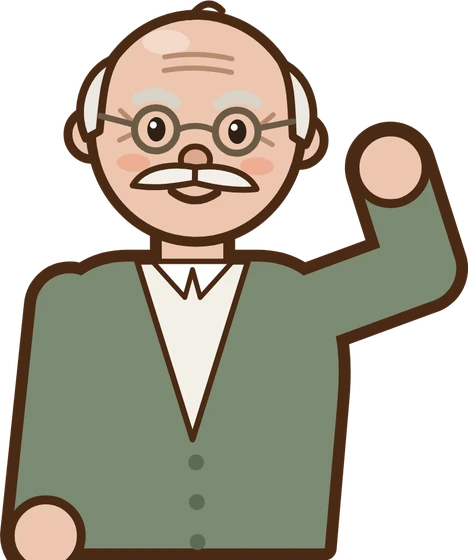
Gustaf is 80 years old. It's 1952, and from his home in Mora, Minnesota, he looks back on a long life that began on the other side of the ocean.


1880Born in a red cottage by Lake Siljan. Every June the whole family walks the cows up to the summer farm, deep in the forest.
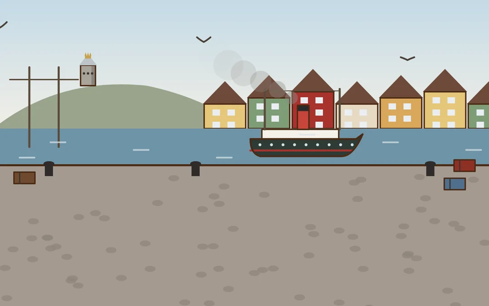
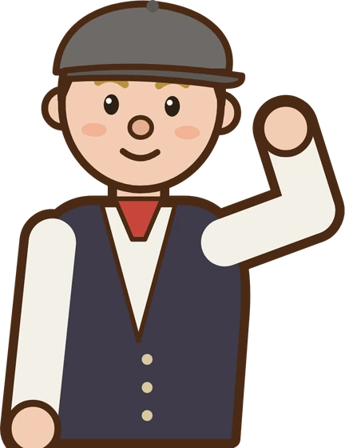
1891At nineteen he leaves with one trunk and a ticket to America. “I'll write every month, Mother. I promise.”
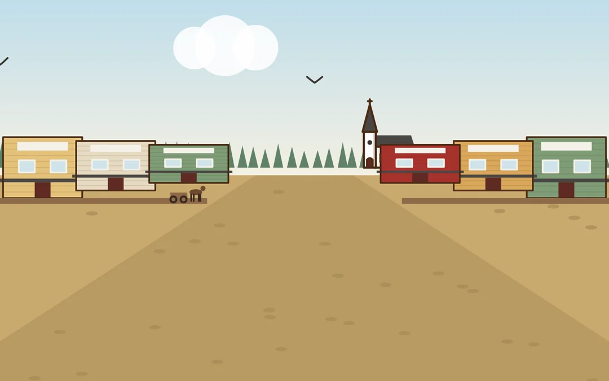
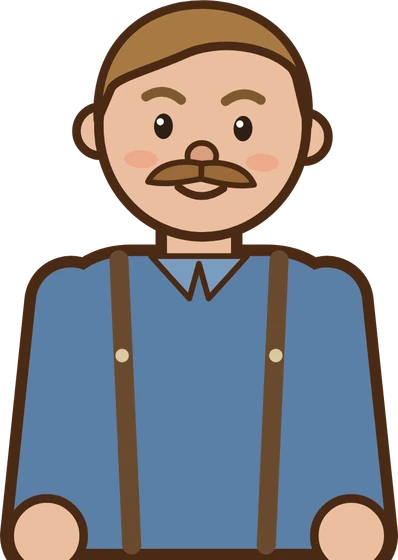
1915In a new town that was also called Mora, he builds a farm, a family and a life. But he never stops dreaming of the lake back home.
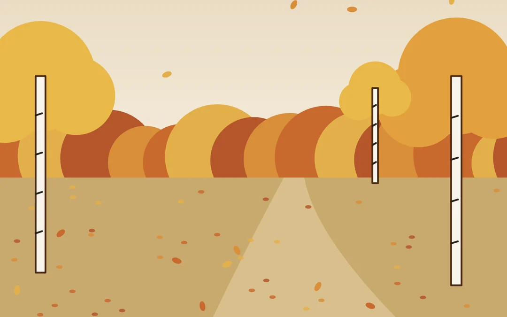
1952One autumn day, at the foot of a birch, a little chanterelle wakes up and asks: “Do you remember, Gustaf?” Then it leads him back through his life.

I'm a chanterelle, and I'll keep you company on every level. I cheer you on, I chat about Gustaf's memories, and I dress up for the seasons: a straw hat in summer, a Lucia crown in December, and plenty more in the trunk.
Simple to learn, gentle on the eyes, and always something to look forward to.
Join the letters on the wheel to make words and fill the crossword.
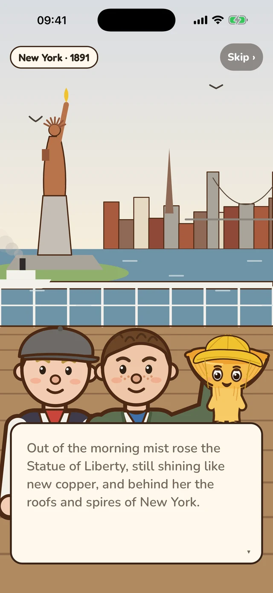
Each chapter brings back a part of Gustaf's life, told in warm little scenes.
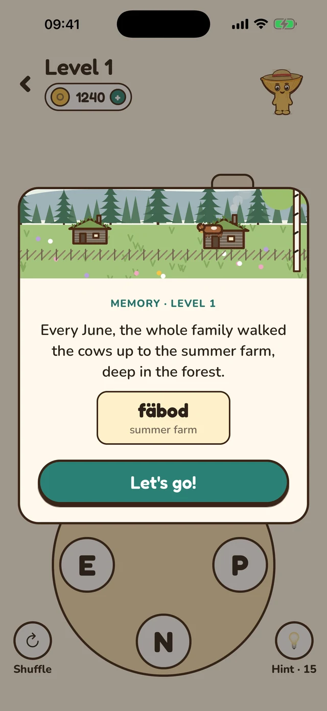
Every level ends with a memory and a Swedish word, always with its meaning.
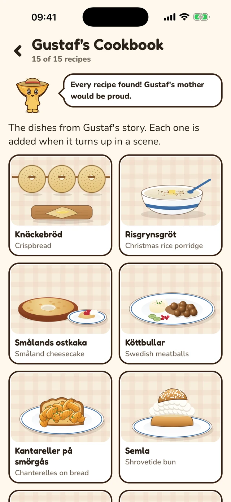
Collect 15 old Swedish dishes, keepsakes and outfits along the way.
Big letter tiles, and three text sizes for the story and the Swedish words.
There's no timer in the levels. Play for five minutes or an hour.
Start playing right away. Sign in only if you want your progress backed up.
Swipe across the letters or tap them one by one, whichever feels easier. On iPhone and iPad.
A fresh daily puzzle with a Swedish word of the day, and a forgiving streak.
13 chapters, plus side trips, seasonal journeys and gentle music you can turn off.
Mora, Minnesota was named after Mora in Sweden, and the two towns became sister cities in 1972. Gustaf's Journey is a love letter to both.
On the shore of Lake Siljan in Dalarna. The red Dala horses are carved in nearby Nusnäs, and the great Vasaloppet ski race ends here.
A town Swedish settlers named after home, with a 22-foot Dala horse and its own Vasaloppet ski race every winter since 1973.
Special chapters open on their dates, each with its own levels, scenes and a new outfit for Kantis.
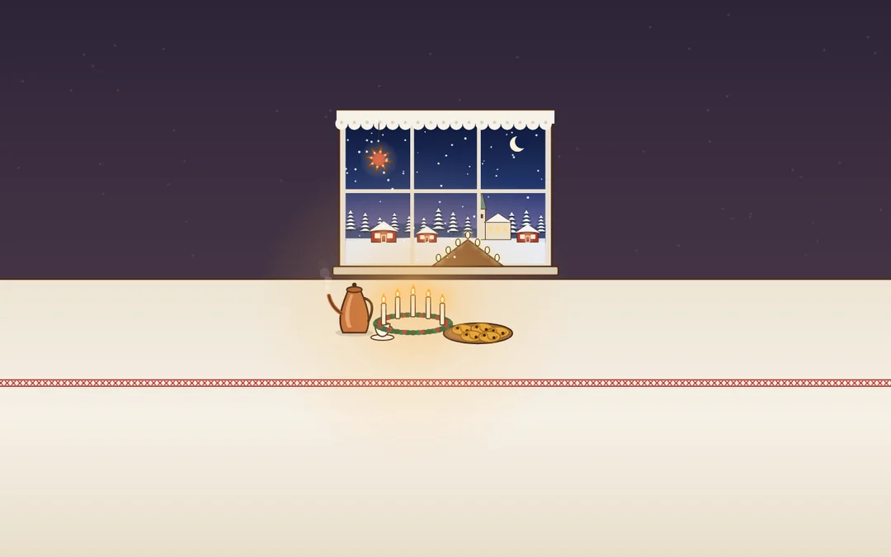
Light in the long night, with saffron buns and candles.
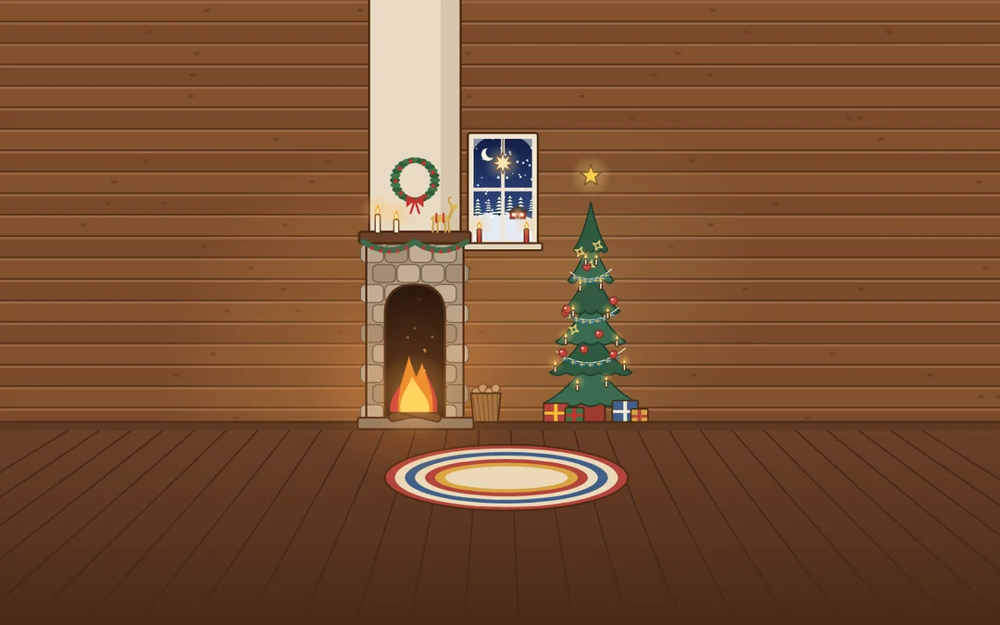
A Swedish Christmas in Minnesota, from Brita's parcel to the church supper.
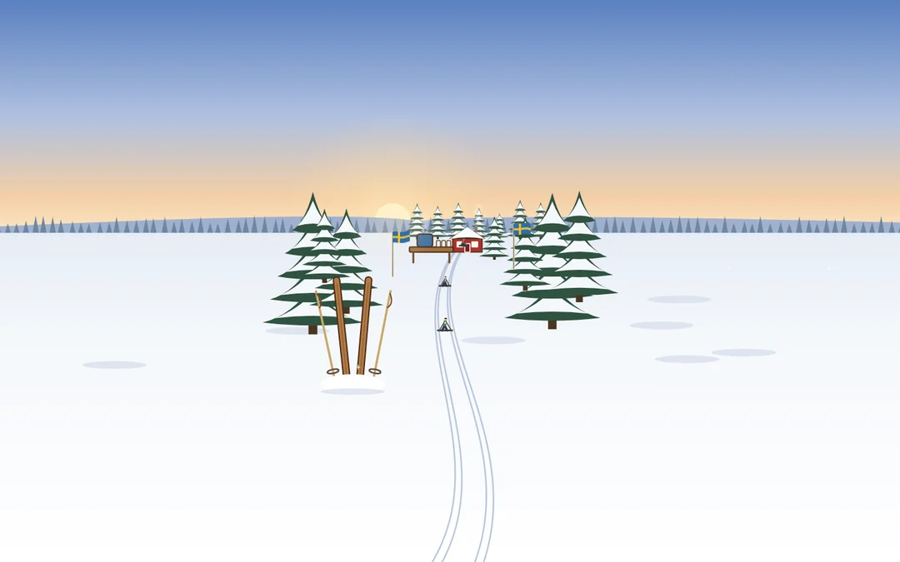
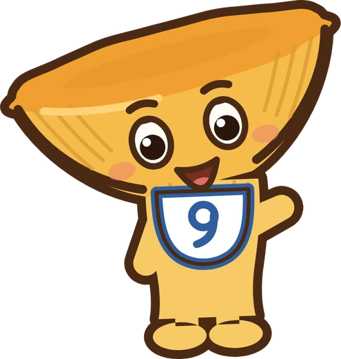
The Vasaloppet, all the way to the finish in Mora.
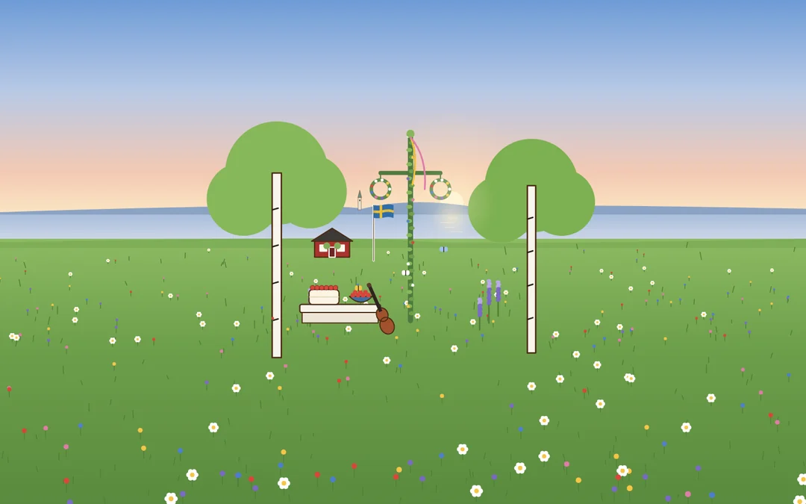
Flowers, a maypole and the lightest night of the year.
Yes, it's free to download and play. After the first 20 levels, a short ad appears between some levels. An optional Pro subscription removes those ads and adds 3 free hints a day. Coin packs are optional too.
No. You can start playing right away. If you like, sign in with Apple or Google to keep your progress safe and carry it to another iPhone or iPad.
Yes. Settings has three text sizes (Normal, Large and Larger) for the story, the memory cards and the Swedish words, and the game follows your iPhone's own text size too. The crossword letters are big from the start.
No. There's no clock in the levels, so you can take as long as you like.
Not at all. The game is in English. Along the way you'll pick up Swedish words, each with its English meaning.
It's made for iPhone and iPad. There's no Android version yet.
We're happy to help. Visit our support page to get in touch.
Pour a cup of coffee and solve your first crossword. Kantis is waiting.